Windows Repair - бесплатный инструмент восстановления, который позволяет исправить большое количество известных проблем Windows, включая ошибки реестра и разрешения файлов, а также проблемы, связанные с веб-браузером Internet Explorer, обновлениями Windows Update, Брандмауэром Windows Firewall и многое другое.
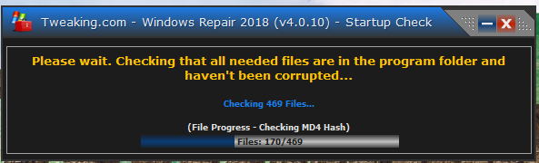Рис. 1. Проверка обновления программы
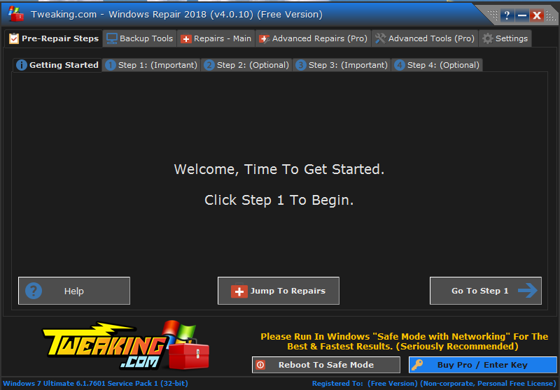Рис. 2. Окно приветствия
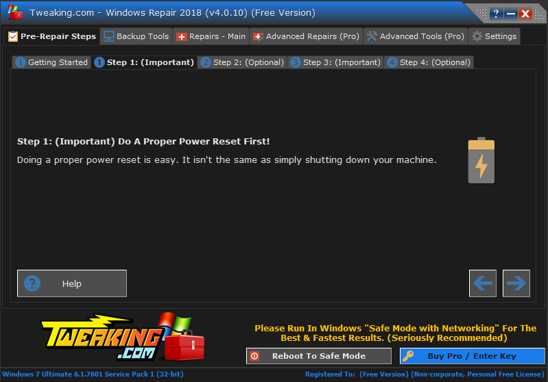Рис. 3. Правильный сброс питания
Первым шагом нам предлагают сделать правильный сброс питания, для этого надо перезагрузить компьютер.
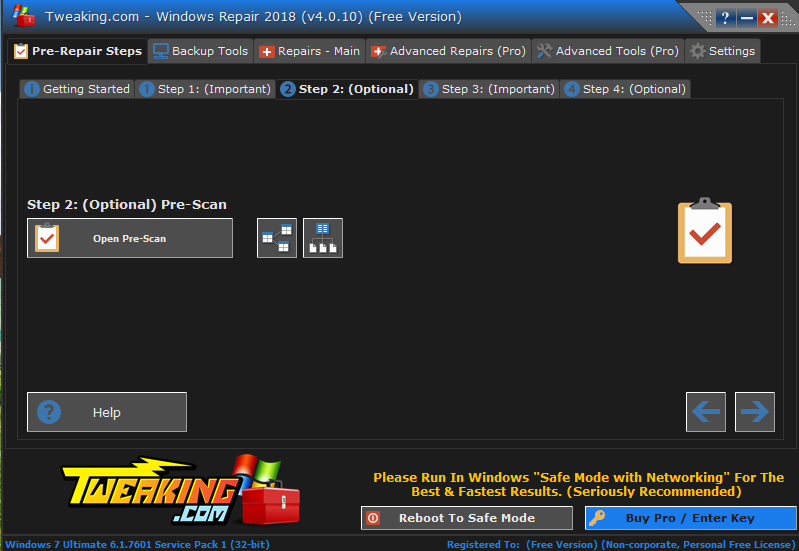Рис. 4. Предварительное сканирование
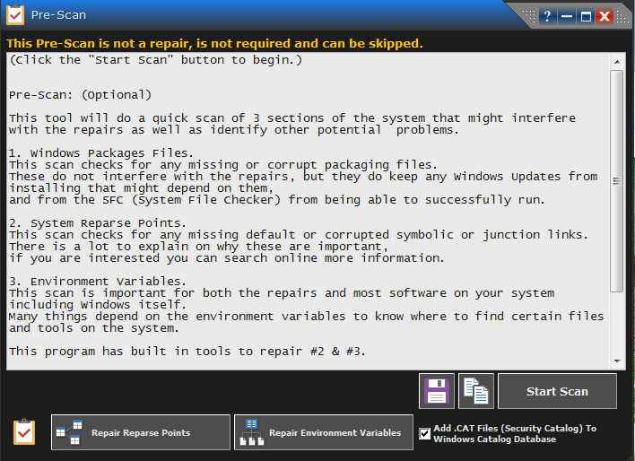Рис. 5. Описание предварительного сканирования
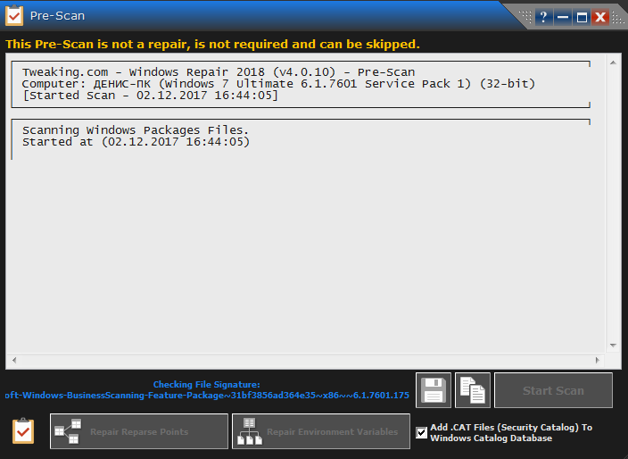Рис. 6. Процесс сканирования файлов пакета Windows
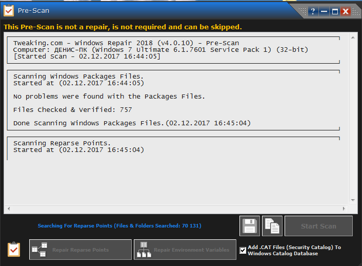Рис. 7. Завершение сканирования файлов пакетов Windows
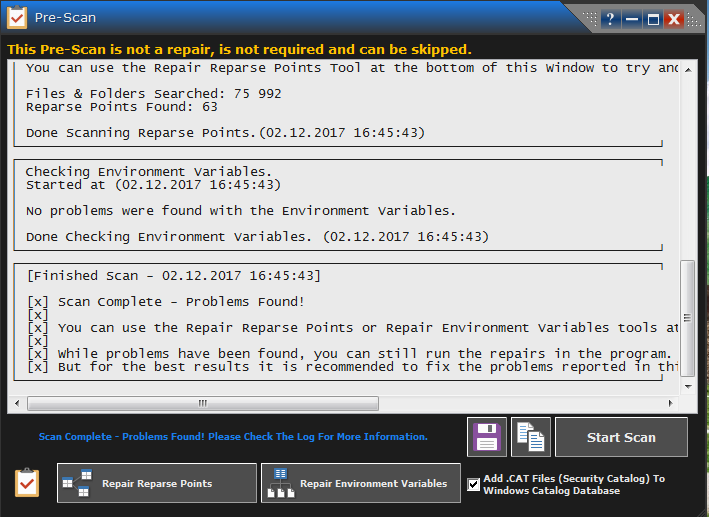Рис. 8. Завершение сканирования
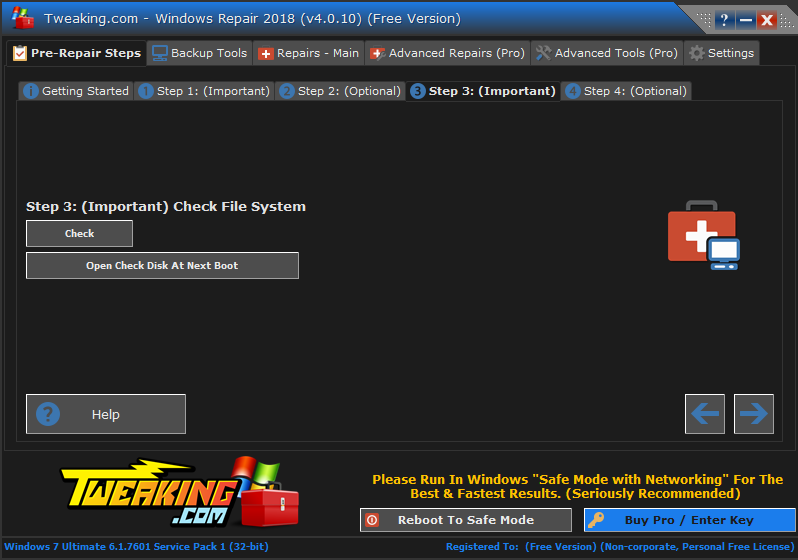Рис. 9. Проверка файловой системы
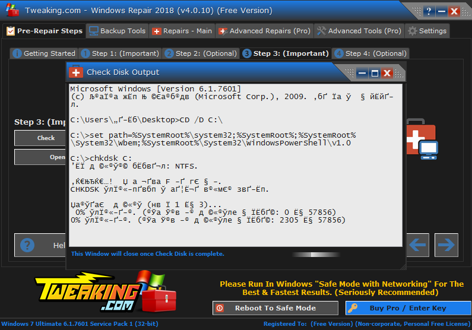Рис. 10. Проверка дисков
Следующий шаг предлагает нам проверить системные файлы.
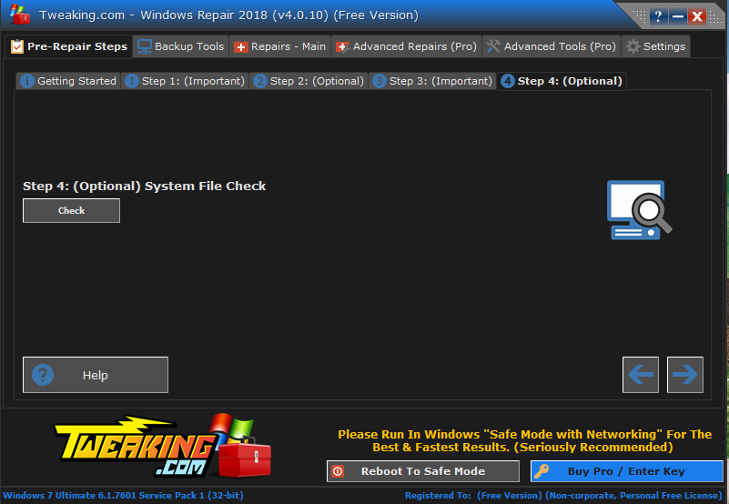Рис. 11. Проверка системных файлов
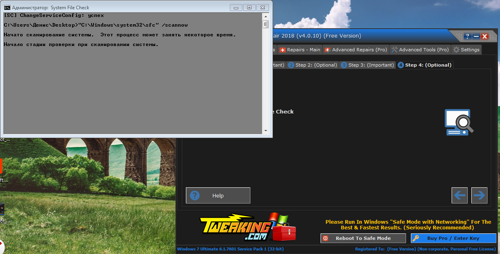Рис. 12. Процесс сканирования с помощью командной строчки
Для этого запускается команда /scannow в командной строке Windows.
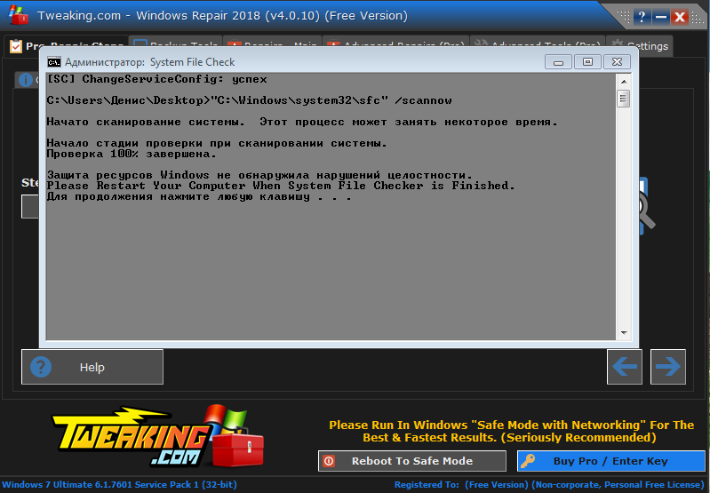Рис. 13. Завершение сканирования
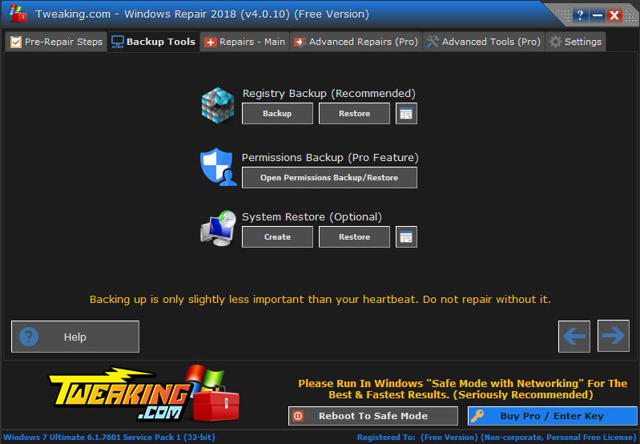Рис. 14. Выбор параметров восстановления
После процесса сканирования нам предлагается выбрать способ восстановления системы: восстановление реестра, восстановление прав или же системное восстановление.
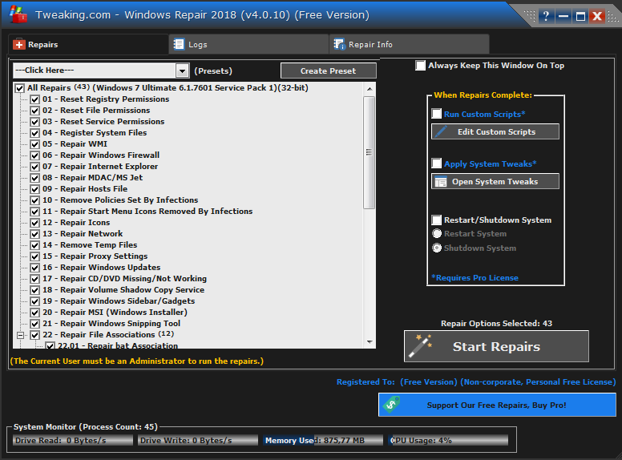Рис. 15. Выбор элементов восстановления
Следующий шаг предлагает нам выбрать те элемента, которые мы хотим восстановить. В нашем случае это системные параметры и настройки.
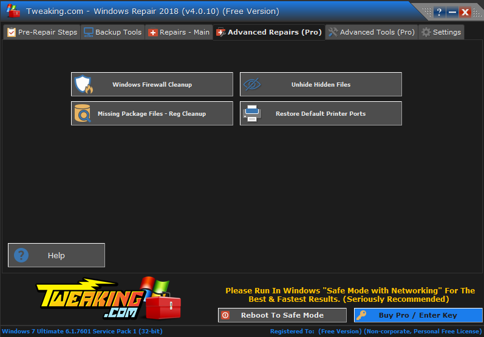Рис. 16. Расширенные настройки восстановления
Расширенные настройки восстановления представлена на рисунке 16. В этом случае требуется приобрести профессиональную версию программы.
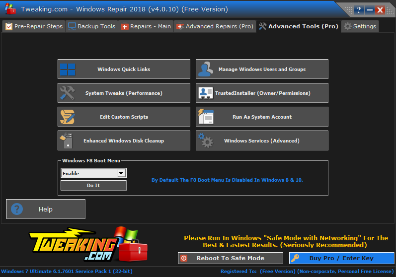Рис. 17. Расширенные настройки
Вот и вся программа. Достаточно удобная для того, чтобы восстановить системные настройки и службы. В случае если у пользователя постоянно возникают ошибки, то можно воспользоваться данной программой, не прибегая к переустановке операционной системы.